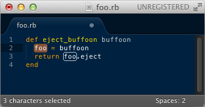
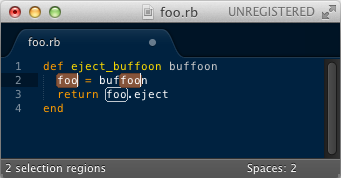
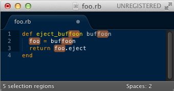

How to select all instances of a variable and edit variable name in Sublime
If I select a variable (not just any string) in my code, all other instances of that variable get a stroke (white outline) around them:

Is there a keyboard shortcut that will let me select all of those instances of the variable and edit them all at once?
Things I've Tried:
⌘``D, ⌘``K, and ⌘``U lets me select them one-by-one, but I have to
manually exclude the non-variable string matches:

And using Ctrl``⌘``G simply selects all the string matches:

Clearly, Sublime is able to differentiate between variable and string matches. Is there no way to select just the variable matches?
Answer
- Put the cursor in the variable.
Note: the key is to start with an empty selection. Don't highlight; just put your cursor there.

- Press
⌘``Das needed. Not on a Mac? UseCtrl``D.

Didn't work? Try again, making sure to start with nothing selected.
More commands:
Find All:
Ctrl``⌘``Gselects all occurences at once. Not on a Mac?Alt``F3Undo Selection:
⌘``Usteps backwards. Not on a Mac?Ctrl``UQuick Skip Next:
⌘``K``⌘``Dskips the next occurence. Not on a Mac?Ctrl``K``Ctrl``DSublime Docs
Suggest
I know the question is about Macs, but I got here searching the answer for Ubuntu, so I guess my answer could be useful to someone.
Easy way to do it: Alt``F3.